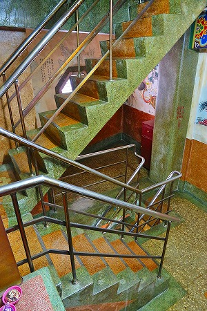
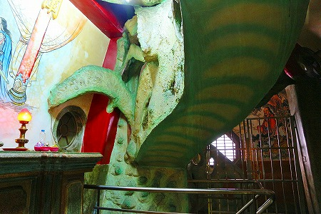
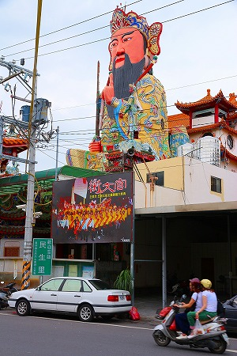

衡文宮/彰化縣
衡文宮/彰化縣
台中市の南に位置する彰化縣。
彰化といえば彰化市の八卦山大仏が有名だが、今回訪れたのは彰化市の南にある員林という街。
決して大都市ではないが、駅前を中心に商店が建ち並び、ゴチャゴチャして活気のある街だ。
そんな街の一画にダンディなお方が鎮座しておられる。
…こ、これは。
全國最大尊玄天上帝だそうで…。
玄天上帝とはいわゆる道教神で北方の守り神とされている。
いわゆるキトラ古墳に描かれているあの玄武のことである。
台湾では何といっても高雄の蓮池潭に浮かぶ玄天上帝像が有名だ。
しかしここの玄天上帝も負けてはいませんよー。
何といってもマンガチックなお顔がイイじゃないの。
さらに普通の街の普通の通りに突如現れるものだから、そのファーストインパクトと破壊力はかなりのもの。
早速中に入ってみよう。
門を潜ると祭の写真がたくさん飾ってあった。
凄い量の豚の生贄だ。
また、電飾祭壇が凄い事になっている。ああ、冬にやるあの祭かー。これは一度見てみたいなあ〜。
で、本尊。
もちろん玄天上帝が祀られているのだが、注目すべきは左右の階段。
この階段を上っていけば、きっと巨大玄天上帝サマの直下まで行けるはず。
というわけで早速2階に行きますよ。
2階には六十太歳がズラリと並んでいた。年回りのカミサマね。
もちろん最も注目すべきは目から手が出ている甲子太歳金辨大将軍である。
期待していたよりもやや控えめな「目から手」状態。しかしそれでも異様なカミサマっぷりは健在であった。
他の甲子太歳はこんな感じ
十干、十二支の60通りの組み合わせで一番最初の年である甲子（きのえね）は60年間でも大事な年回りとされている。
なので甲子を冠にしている甲子園球場やキノエネ醤油などは甲子太歳金辨大将軍の像を建立しても何らおかしい事などないのである。
いや、むしろ建立した方が自然なのである。
いや、建立すべきなのである。
さらに言えば50メートルの甲子太歳金辨大将軍を建立してくれると嬉しいなあ。
その際はバーンと、20メートルほど目から手を飛び出させていただけると嬉しいなあ。
そして目から出た手にある目の部分を展望台なんかにしてくれたら嬉しいなあ。
さらに「手から目」メガネなどをオフィシャルグッズとして販売してくれたら嬉しいなあ。
…嬉しいなあ…
…あ、スミマセン。独りでうっとりしちゃいました…。
外のテラスに出てみたら案の定、玄天上帝が聳えてました。
印を結んだその姿はいかにも道教のカミサマ、といった風情。
高さは21ｍ。下から見上げると一寸チビるレベルの大きさ。
お召し物もゴージャス！
耳が大きいなあ、と思ったら飾りで、ホンモノの耳はその後ろにありました。
地上から見るよりはいくらかマトモというか何というか…。
素足で蛇と亀を踏みつける姿は玄天上帝の決めポーズだ。玄武だけに。
玄天上帝像の脇から中に入れるようだ。
台湾では巨大神像や大仏の胎内巡りができるところは少ない。
最初から胎内めぐりが想定されていないのではなく、階段は上まで通じているのに入場できないケースが多いいのだ。
なので内部に入れるだけで大興奮、なのである。
おお、こりゃラッキー！行かいでか。
中に入ると巨大な六角形の窓が。玄天上帝の股座にあった窓だ。上の画像で確認されたし。
ゴージャスな神像の割には内部はシック、というか薄暗い。
ここで特筆すべきは左右二つの階段が対になっている点。
つまり行きと帰りの経路が分かれているのだ。
これは日本のさざえ堂同様、上りと下り、それぞれ別の経路を通って参拝すべし、というメッセージなのだ。
以前より「コンクリ大仏のルーツはさざえ堂」説を唱えさせていただいている私としては、このように海外の事例でもさざえ堂的な空間が存在することを確認できて大いに満足なのである。
詳しくは拙著「お寺に行こう！」を読むといいでしょう。

お買い求めはこちらから。あ、駄菓子みたいな値段で売ってらぁ…。
てなわけでさらに上りましょう。

それまで普通の階段だったのにいきなり遊園地の遊具みたいなぐにゃりとした通路が現れた。

いよいよここからがこの玄天上帝の胎内巡りの本番だ！
…と興奮していたら、この先はあっさり立ち入り禁止になっていた。
残念。ここも最後まで行かせてくれないのか〜！
恨めしげに見上げてみると、かなりグニャグニャな空間が続いているようだ。
マンガチックな玄天上帝の外観とドロドロのグロッタのような内部空間のギャップに驚きつつも来た道を戻るのであった。
いや！来た道とは反対側の階段を下りたんですけどねっ！
夜になるとこんな感じになるらしい。こりゃ夜見たほうが断然カッコイイな。
改めて表通りから眺める。

よく見たらあちこちにイルミネーションチューブが張り巡らしてある様子。
よし、今度来るときは夜にしよう！
それにしてもうっとりするほど素敵なたたずまいだ。
街中に大仏がおわす光景も中々オツなものだが、道教神の巨像のインパクトにはとてもかなわないなあ。
何たってメチャ派手だもの。
facebookやってますね。
珍寺大道場 HOME